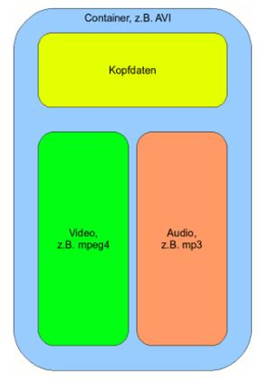

Hay una serie de factores esenciales a tomar en cuenta al crear y editar un video:
La resolución de un archivo, tanto de imagen fija como de una imagen en movimiento es la medida de sus dos
dimensiones: ancho y alto.
Al producir video podemos elegir distintas resoluciones de edición y exportación. Actualmente las
resoluciones en píxeles más comunes para video son (siempre en ancho x alto):
Los cuadros por segundo corresponden al parámetro temporal de una imagen en movimiento: ¿Cuántos veces se
actualiza la imagen a lo largo de un segundo?
Los cuadros por segundo se definen según la configuración de las cámaras al grabar. Luego, esa configuración
debe mantenerse, o modificarse, al exportar el video. Y finalmente, la misma decisión pasa en los programas
de reproducción si es que nos permite configurar el frame rate.
Un archivo de vídeo está formado por un container, que podríamos definir como una caja que guarda de forma
encapsulada el contenido de este archivo, como datos de audio, vídeo y texto. Todo ello forma parte del
archivo de vídeo. Y el formato de vídeo sería la estructura de este archivo o contenedor.

Como ya se sabe, un contenedor NO es lo mismo que un codec, he aquí una rápida comparación para tomar en cunta a la hora de crear videos: